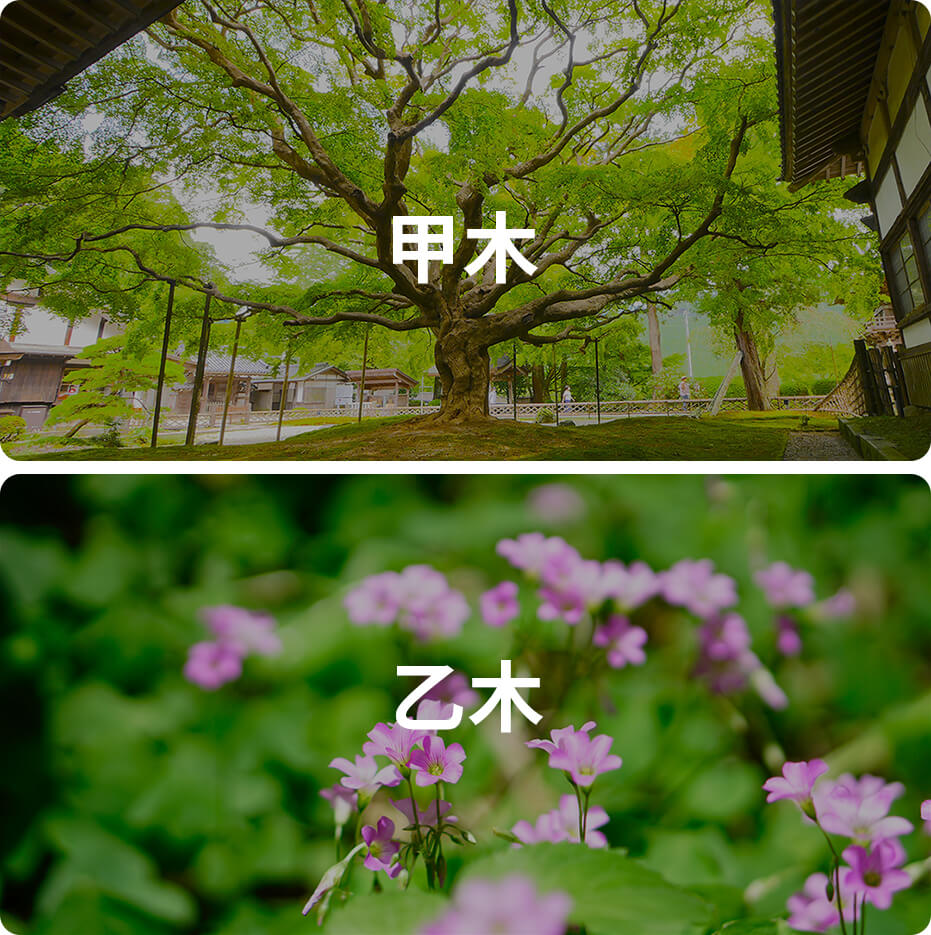

甲木在十天干里排行第一位，属阳木，主仁。
自然属性：参天大树

甲木性格
仁慈，上进，永不屈服
关键词：仁慈/助人
甲木是参天大树，能够遮风挡雨，因此甲木出生的人，注定是一个仁慈的人，总喜欢帮身边的朋友解决问题，乐于助人。
关键词：上进
甲木扎根土地，一生不断向上生长，枝繁叶茂，因此甲木的人有上进心，有着积极的人生态度，躺平是不可能的，只要甲木活着就一直向上生长。
关键词：不屈服
甲木一生最大的理想是成为栋梁之材，因此甲木不怕庚金的砍伐，为了能成材，能抗压，勇于挑战生活中的挫折和压力，永不屈服。
甲木日主人的正面性格：
富有上进心、恒心，正直，不马虎，有责任感，不轻浮，能助人，能体谅人。
甲木日主人的负面性格：
不知妥协变通，欠缺敏捷性和灵活性，会过于主观会过度干涉别人，给自己造成负面的影响。
诗诀
甲木生人最聪明，深谋远虑是英雄。
别人若有为难事，舍已为人也现成。
（性格气质需要综合命局的五行、十神、用神等特质综合评判，此处仅提供甲木日主维度的特质参考，需知甲木越旺，则甲木特性越明显）
甲木名人
李小龙、吴京、岳飞、古天乐、宋庆龄、武则天、李冰冰
甲木类象
大树、森林、元首、统帅、火星、雷电、大路、桥梁、胆囊、头面、脑神经、政治、农林、松柏、猫、虎、电线杆
《滴天髓》论甲木
甲木参天，脱胎要火。春不容金，秋不容土。
火炽乘龙，水宕骑虎。地润天和，植立千古。
《渊海子平》论甲木
甲木天干作首排，原无枝叶与根荄；
欲存天地千年久，直向沙泥万丈埋；
断就栋梁金得用，化成灰炭火为灾；
蠢然块物无机事，一任春秋自往来。
乙木
乙木在十天干里排行第二位，属阴木，主仁。
自然属性：苗圃花草
乙木性格
柔和、敏感、适应力强、有谋略
关键词：柔和
乙木是花草和藤本，具有柔软的身躯，正如“乙”字结构，九曲回肠，花草默默地伏在低处生长，不与它人争高。这注定了乙木人是柔和而谦卑的，从不会直接拒接别人，懂得去迁就别人，照顾他人的感受，如柔弱的女子。
关键词：敏感
乙木是小花小草，不同于甲木参天大树，乙木身形弱小而柔软，缺乏安全感，因此也带有敏感、心思细腻的性格。乙木人注重细节，天生有超强的观察力，能敏感体察别人的情绪变化，但人多面前会把自己的情绪隐藏得很好。
关键词：适应力强
狂风可以把大树连根拔起，但乙木的枝条可以迎风摆柳，具有极好的韧性。乙木可以生长在树荫下、田埂上、悬崖峭壁上，只要风把种子散播在适合的地方，乙木就可以生根发芽，这代表着它生存能力很强，对环境的适应很快，正所谓“藤萝系甲，可春可秋”。
关键词：有谋略
善于谋略和逻辑分析，懂得忍耐、随机应变、顺势而为，喜暗斗不喜明争，适合做幕后大佬。国内很多顶尖的幕后智囊团、顾问、策划者都是乙木出生。
乙木日主人的正面性格：柔顺、温和、有绝佳的情绪管理能力，不会坚持己见，做事灵活变通，善于沟通；有丰富的表现力，反应敏捷，富有协调性，韧性超强，适应环境能力强。
乙木日主人的负面性格：敏感，情绪多变，易见风转舵、三心二意，心软，没主见、怯懦；非常现实，内心占有欲强，有心机，容易经不起诱惑而受骗。
诗诀
乙木生人最耿直，心实见景有心机。
今日吃他一杯酒，不到明天就还席。
为人办事多公道，从来不会占便宜。
通情达理多尊让，能忍能让心最慈。
（性格气质需要综合命局的五行、十神、用神等特质综合评判，此处仅提供乙木日主维度的特质参考，需知乙木越旺，则乙木特性越明显。）
乙木名人
李鸿章、欧阳修、齐白石、金庸、麦当娜 、戴安娜、王祖贤、霍建华
乙木类象
花草、苗圃、文人、僧道、肝脏、毛发、神经系统、丝绸、香料、冥王星。
《滴天髓》论乙木
乙木虽柔，刲羊解牛，怀丁抱丙，跨凤乘猴，虚湿之地，骑马亦忧，藤罗系甲，可春可秋。
《渊海子平》论乙木
乙木根荄种得深，只宜阳地不宜阴。漂浮最怕多逢水，刻斫何须苦用金。
乙木根荄种得深，只宜阳地不宜阴。漂浮最怕多逢水，刻斫何须苦用金。